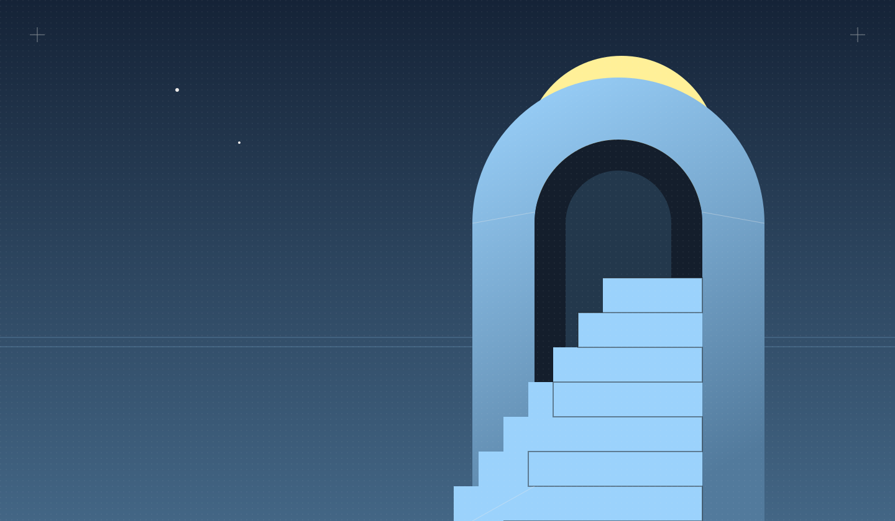
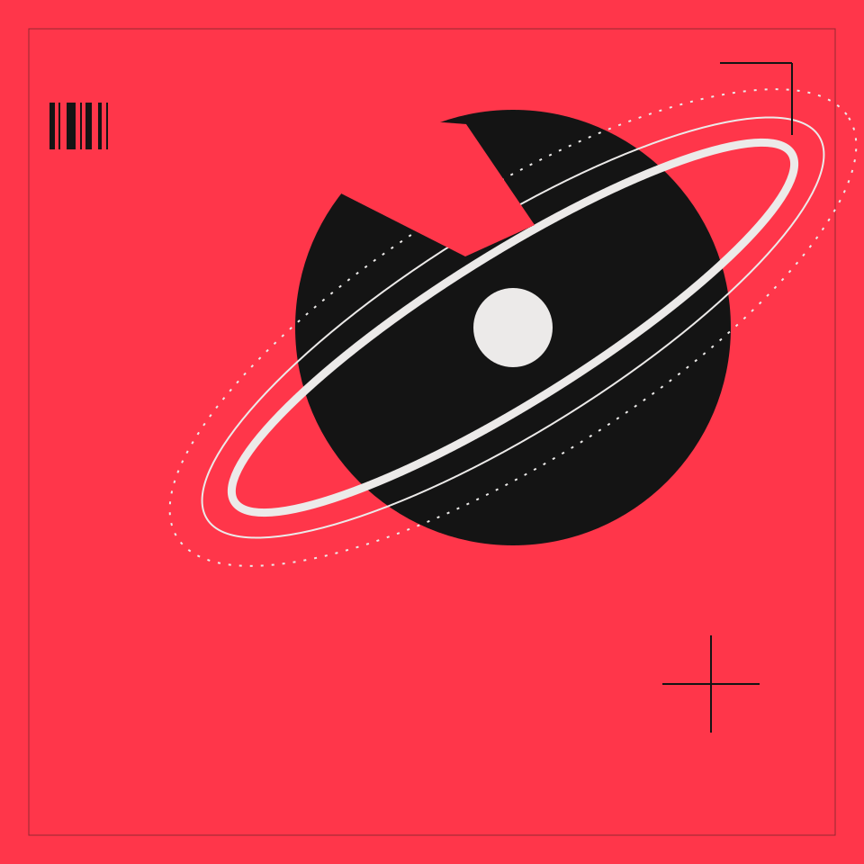
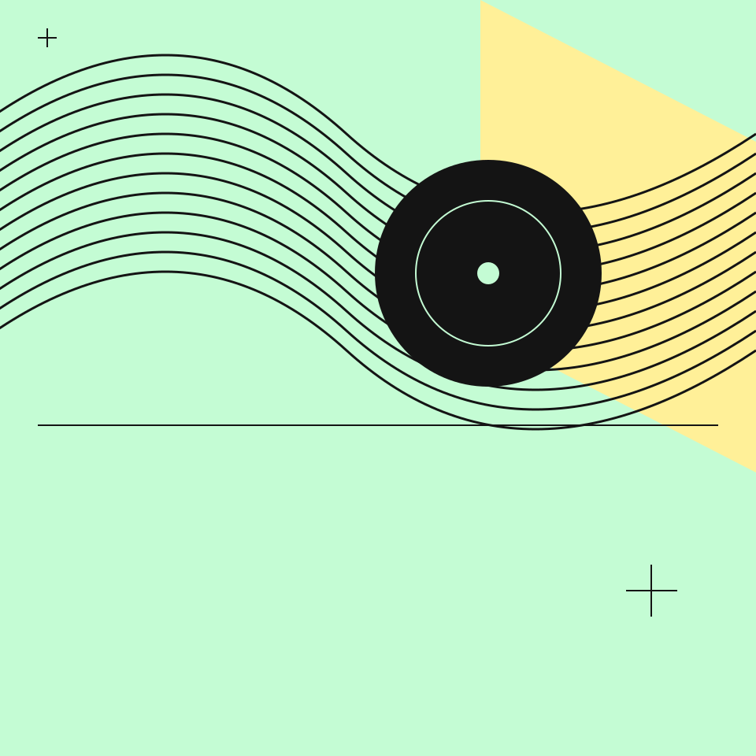

海报 / 空间与光线蓝色时刻 BLUE HOUR 构图说明
以拱门和阶梯建立纵深，圆月作为画面焦点。标题留在左下角的暗部，让文字与主体各有空间。
- 色彩
- 夜蓝 / 天蓝 / 淡黄
- 形式
- 宽幅海报 · 原创 SVG
- 适合
- 项目首图、专题开场
01 / 原创视觉研究
三组原创 SVG 海报。
从画面比例、色彩到文字留白，
探索不同的构图方式。

以拱门和阶梯建立纵深，圆月作为画面焦点。标题留在左下角的暗部，让文字与主体各有空间。

用大面积珊瑚红建立情绪，再以黑色圆盘和偏轴线条组织画面。标题与曲线形成不同方向的张力。

让重复线条聚集在画面上半部，底部保留安静的排版区。浅色画面用于调整连续深色章节的阅读节奏。
以上均为虚构主题的原创构图样本，不代表真实客户项目。
02 / 字体与留白
A little outside the frame.
大标题，小信息
大幅画面先建立情绪，短标题留下记忆，再用小号文字补充信息。手写批注像创作者留下的一句旁白。
这里使用原创 SVG 和系统字体。用于真实项目时，替换为你自己的品牌、影片或摄影。
03 / 带走这套设计语言
Your next scene ↘